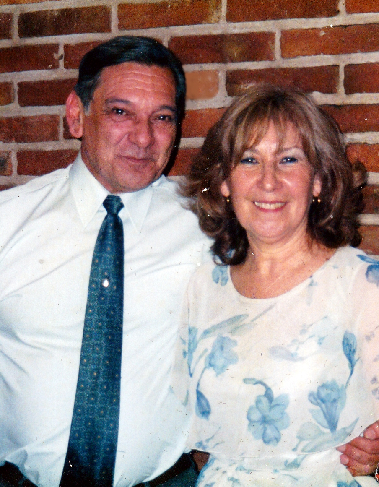

Historia

Carlos Enrique Carreras es un distinguido escritor argentino nacido en la pintoresca ciudad de Córdoba en el año 1944. A lo largo de su vida, ha dejado su huella en la literatura de habla hispana, destacándose como poeta, y cuentista. Su obra poética, caracterizada por su profunda convicción de que “ese alquimiesco juego mezcla extraña de sentimiento y lenguaje que llamamos poesía nació para ser cantada, no escrita”, lo ha apartado de los medios tradicionales de publicación prefiriendo medios de comunicación más modernos tales como el DVD y la Internet. Sensibilidad y su habilidad para explorar temas humanos universales, lo han convertido en una figura reconocida en la escena literaria. Carreras demostró pasión por la escritura desde temprana edad y, a medida que crecía, cultivó su talento literario. Se graduó en Letras en la Universidad Nacional de Córdoba, lo que le proporcionó una sólida base académica que influyó en su estilo y contenido literarios; de allí que es fácilmente advertible cierto sabor lorquiano en poemas como Recuerdos y El silencio; o la presencia viva de Neruda en todos los poemas de su Gesta Universitaria (sobre los hechos políticos acontecidos en Argentina en 1966); como así también la influencia de Hesse y Borges en sus cuentos.
A lo largo de su carrera, Carreras ha publicado numerosos álbumes (como él llama a los DVD grabados) de poesía que han cautivado a sus lectores. Sus poemas a menudo exploran temas como el amor, la naturaleza, la soledad y la búsqueda de significado en la vida. Su lenguaje lírico y su habilidad para capturar emociones profundas han hecho de él un referente en la poesía contemporánea. Además de su labor como poeta, Carreras se ha aventurado en la narrativa, escribiendo cuentos que han resonado con los “lectores”, en los que se destaca su habilidad para condensar poderosas narrativas en un espacio reducido.
Carlos Enrique Carreras ha recibido reconocimientos y premios literarios por su contribución a la literatura, pese a que su concepción de la Literatura como necesidad vital, no como oficio, lo hacen reticente a la hora de presentarse a concursos poéticos. Su influencia se extiende más allá de Argentina, ya que sus obras han sido traducidas y grabadas en varios idiomas y han encontrado un público internacional que gusta de su estilo. Carreras es, sin lugar a dudas, un escritor de características muy particulares en el mundo de las letras hispanoamericanas, que ha transmitido su trabajo y concepción de la literatura a través de la cátedra en su tarea docente, la cual le ha exigido la producción de obras eminentemente teorícas como su método de análisis para los cuentos (Análisis del cuento), o su concepción semiótica del signo (Hacia un concepto de Signo) o una Breve antología de poetas españoles , grabada en DVD; e, incluso, una cantidad de traducciones desde el francés y el inglés para uso en la cátedra.